独断と偏見によるコロニーの基本設計
独断と偏見によるコロニーの基本設計
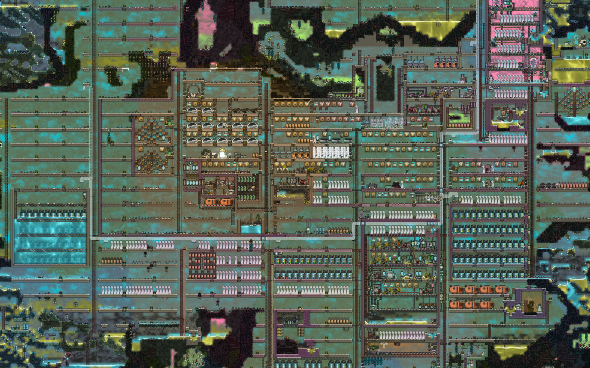
可能な限りスペース効率を追求してコンパクトなコロニーを築きたい人は多いと思うが、本記事では自分が数千サイクルプレイして、最終的には基本的に26x5の部屋と3タイル幅の縦穴のみでコロニー設計をするようになった理由を解説する。
目標
- 完璧なスペース効率よりも、使えない微妙なスペースを残さないようにする
- 部屋ボーナスのつく最小サイズ（64タイル）より充分大きく、やろうと思えば最大サイズ（120タイル）まで比較的容易にスケールできるようにする
- あとあと換気のための配管と、移動手段のための整理をしなくていいように、縦坑を確実に確保する
基本の縦坑構成
縦坑は3タイル幅。真ん中に梯子を通す。左右は必要がない限りは移動手段の滑り棒と転送チューブのためにあけておく。
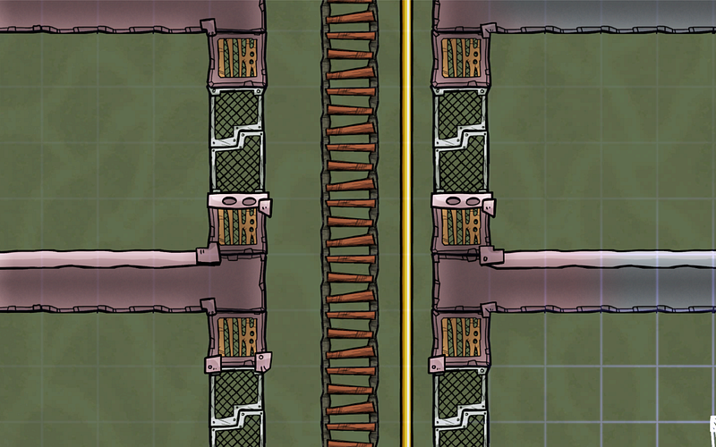
縦坑は基本高さを気にせずに直線にいけるかぎり真っ直ぐ下ろす。
縦穴が長いと、複製人間が途中で持ち物を落としてまた取りに戻って…ということが起こる場合もあるため嫌う人もいるが、これは縦坑のせいと言うより、部屋の配置設計のミスから起こると思うので、必要なら部屋の場所を変更する事で対応可能だ。
基本の部屋構成
寸法
横幅は26タイル。これは実際に部屋として使う24タイルと、両終端にドア・壁として使う2タイルが入っている。
部屋の高さは4タイル。床の分を含めるなら5タイルとなる。4タイルあればほぼすべての施設がきっちりその高さに収まる。
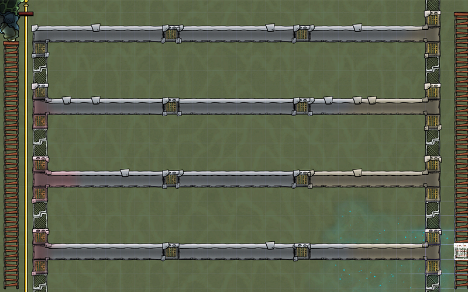
また、ルームボーナスのつく部屋サイズは基本4の倍数なので、計算も簡単だ。24タイル幅の床面積なら、部屋一個でまるまる使えば96タイルになる。これは例えば厩舎の最大サイズだ。
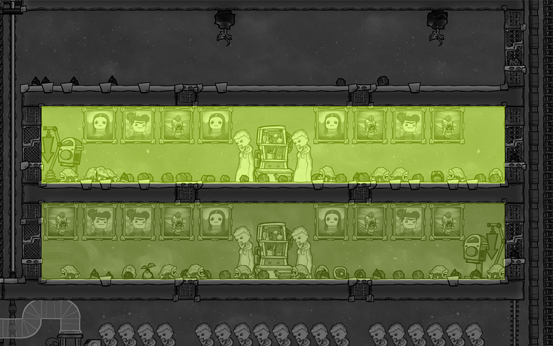
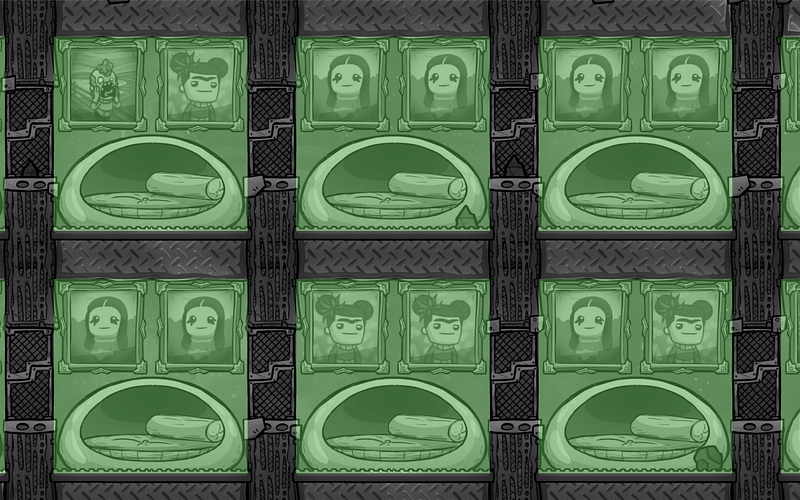
さらに部屋の高さを4タイルにすると、ゲーム終盤に稀に出てくる5タイルの高さのある施設にも比較的使い勝手を損なわずに対応できる。
5タイルの施設がある場合はそれまで4タイルずつだった高さをその部屋の周りだけ3タイルと5タイルにわける。
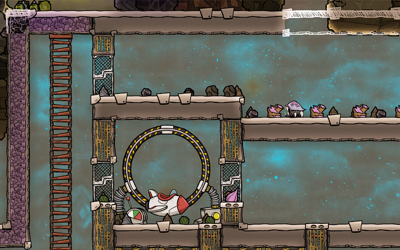
もちろん、2タイルと5タイルでも大丈夫なのだが、2タイルだとおける施設の種類がぐっと減るため、大分使いにくい部屋になる。3タイルにしておくと大分選択肢が増える。
実装
基本的に前掲の画像の通りだが、その理由等をまじえつつ解説する。
縦穴を3タイル幅で取って、なおかつ縦に長いと、液体が簡単に一番底の方まで落ちていくことが多い。
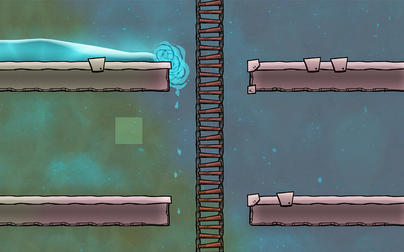
狙ってそうすることも多いが、知らないうちに真水に汚染水が混ざってたとか、マグマ層で水蒸気になってたとか、そういうのは避けたい。
そのため、すべての部屋はドアの位置を床より1タイル高いところに設置する。ドアを作らなくとも、基本一つよけいにタイルをつけておく。
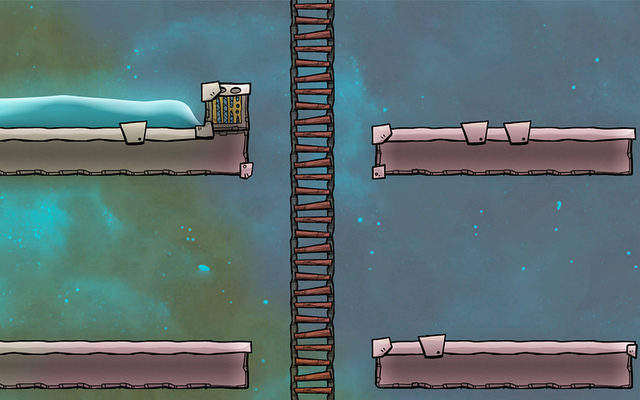
こうすると、液体がいきなり流れ落ちていくことはないので、万が一のお漏らしや、間違って切ってしまったパイプ等にも対処するだけのバッファーができる。
なお、スーツなしで活動するエリアではこの水止めは気流タイルで作る。（それ以外は普通のタイルでもよい）。こうすることにより、二酸化炭素等がたまるのを防げる。
同様に水止めの3タイル上（ドアの真上）も気流タイルにしておくと、水素や汚染酸素が溜まるのを防げる。
気流タイルはあと、床の左右端から数えて9タイル目にも施しておく（上の階も同様になるので、天井からも換気可能になる）。
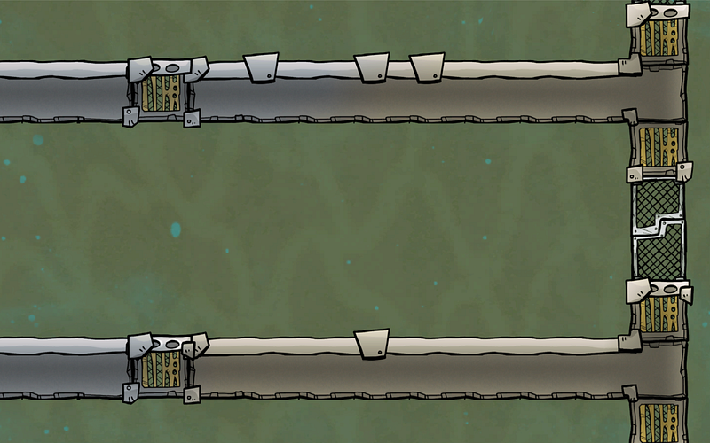
これで上下左右すべての方向での換気が可能になり、二酸化炭素は確実に下に抜け、水素、酸素の類は上に上ってくる。吸気ポンプで無理に換気しなくとも、全体的にいい感じになるはずだ。
統一仕様の利点
ここまで統一した仕様にすると、2タイルや3タイルしか必要としない施設を置くと若干のスペースが無駄になるので気になる人も多いかもしれない。
ただ、統一仕様にすると、まずマップのほとんどが升目模様になるため、配管・配線が圧倒的にクリーンになるという大きな利点がある。
また、部屋の移動・追加も簡単である。例えば厩舎を違う場所に移動したいと思ったら、全く同じデザインの部屋をそのまま目的地に作った後、牧夫に家畜を移動させてもらうだけである。
追加する際も全く同じ要領だ。
また、水タンクのようなものはニーズに応じて拡張したり、減らしたりすることがあると思うが、これも同じ配管パターンの部屋を真下や真横に作れば済む。
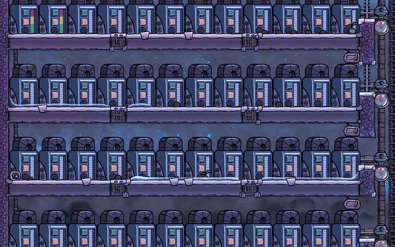
さらに縦坑は必要最低限の移動手段である梯子の他に左右一個ずつ空きがあるので、滑り棒と転送チューブ両方を通すスペースが充分にある（転送チューブを横向きに入れるには所々断線する必要はあるだろうが…）
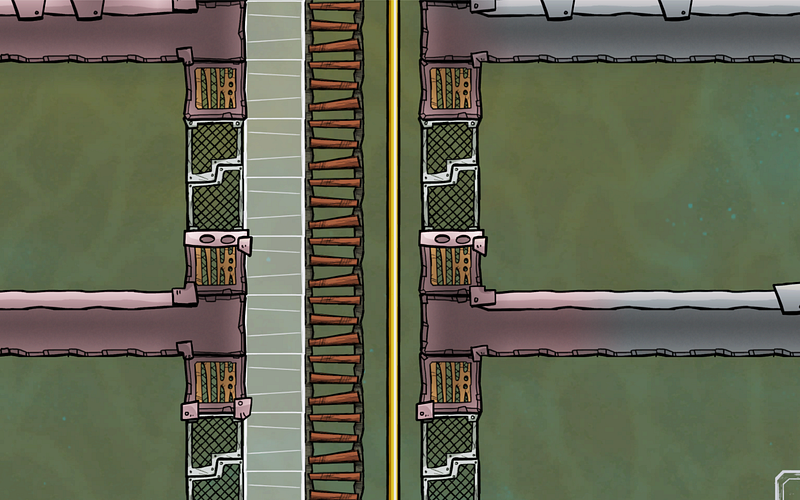
重要なのは、この仕様がコロニー内のどこでも同様に適用されているということである。仕様が一緒なら迷うことも少ない。結果より早く、キレイな設計の施設を整えることができるようになるだろう。